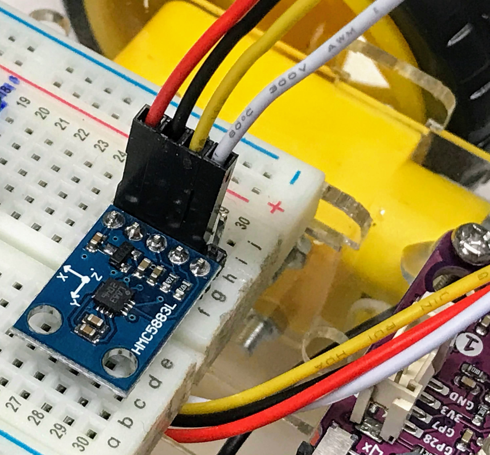

MicroPython Compass Lab

This lab will use the popular HML5883L chip to show how we can sense a magnetic field and allow our robots to sense the direction they are going.
About the HML5883L
The HMC5883L is a multi-chip module able to measure magnetic sensing. It can communicate with an I2C digital interface with other devices in order to let creating applications such as low-cost compass, being used in many electronic fields like mobile phones, netbooks, consumer electronics, auto navigation systems, and personal navigation devices.
The module works with a low voltage supply (from 2.16 to 3.6V) and also has a low power consumption (100 μA).
HMC5883L has a 1° to 2° degrees heading accuracy, which is enough for a wide number of applications. It also allows setting its internal gain to increase resolution with a 3-bit gain control register. But increasing gain also increases noise effects.
Pinout
The HMC5883L pinout has 5 PINs:
- Vcc: Connect to the 3.3 volt rail of the breadboard or power supply
- GND: Ground
- SCL: I2C clock
- SDA: I2C data
- DRDY: Data ready. You can use this to be notified if new data is ready in memory. We will not use this pin in our labs. The
Checking I2C Connections
You can use a standard i2c-scanner program to verify that the four pins are connected correctly:
1 2 3 4 5 6 7 8 9 10 11 12 13 14 15 16 17 18 19 | |
For my system this returns the following report:
1 2 3 | |
You will notice that the scanner found a single device at hex address 0x1e.
Like many sensors, this sensor uses a "memory map" to transmit it's data. You can write a quick test to verify that the values are changing by doing a read from this i2c address like this:
1 2 3 | |
Here is a program that will display the raw values. You can rotate the sensor to verify the raw values are changing.
1 2 3 4 5 6 7 8 | |
Note that these are "raw" values because they have not been converted to easy-to-understand values by the driver.
1 2 3 4 5 6 7 8 9 10 11 12 13 14 15 16 17 18 | |